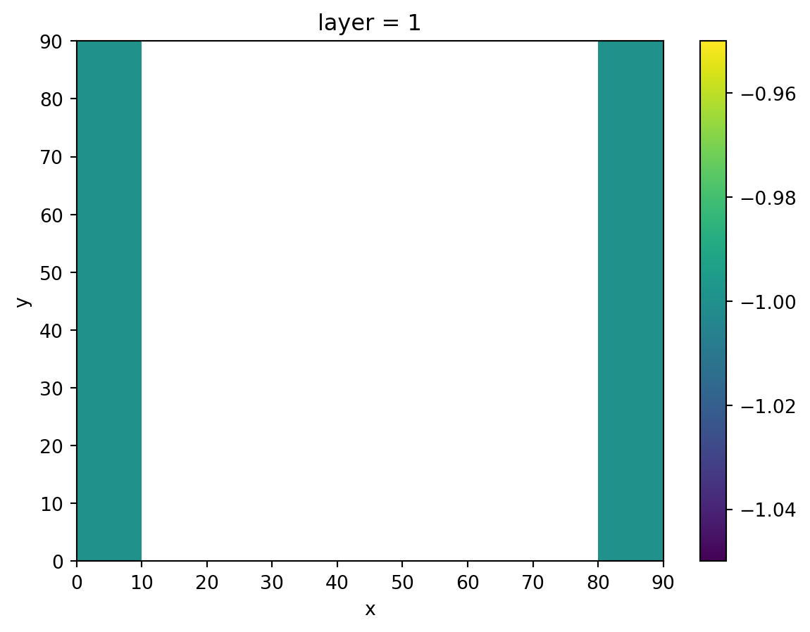
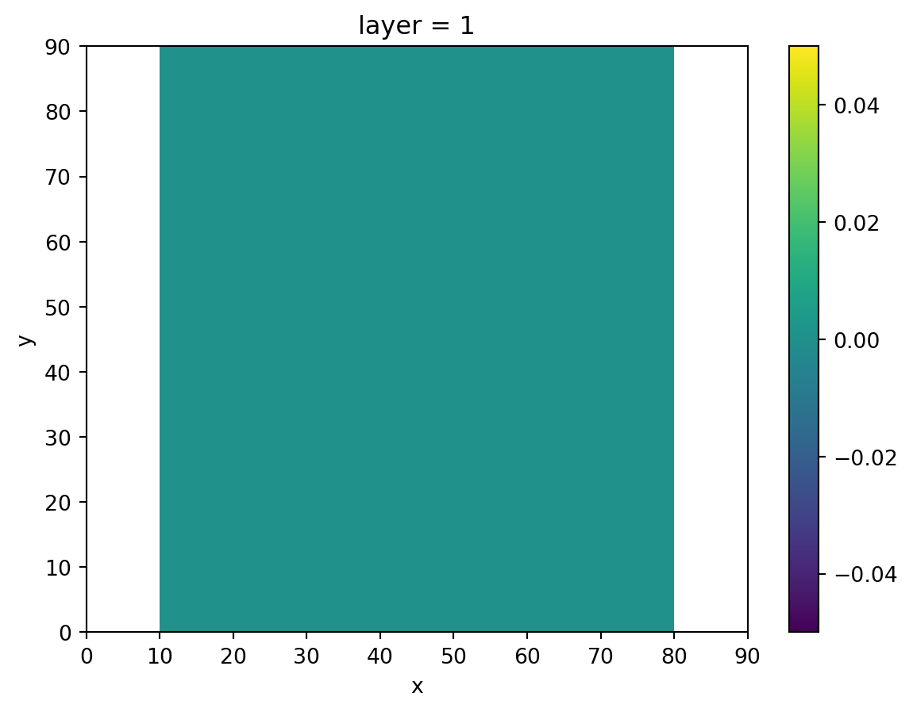
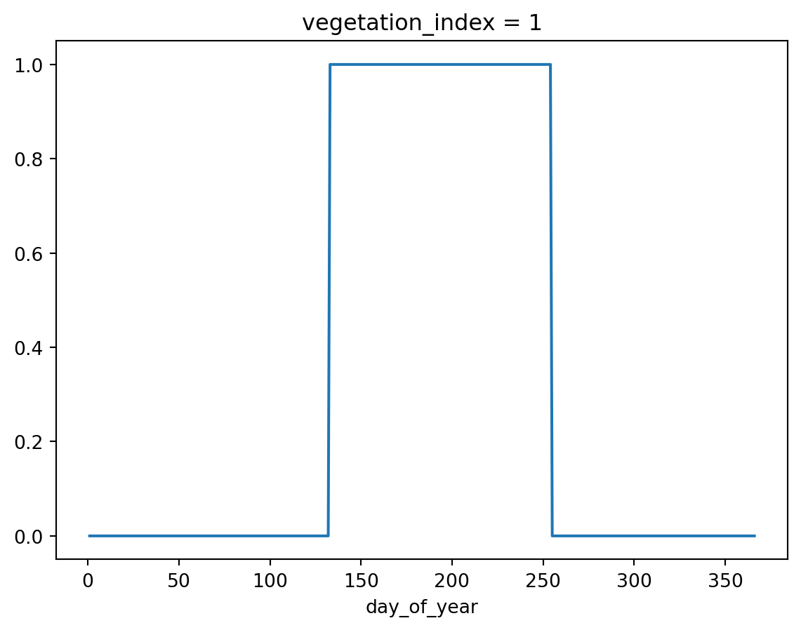
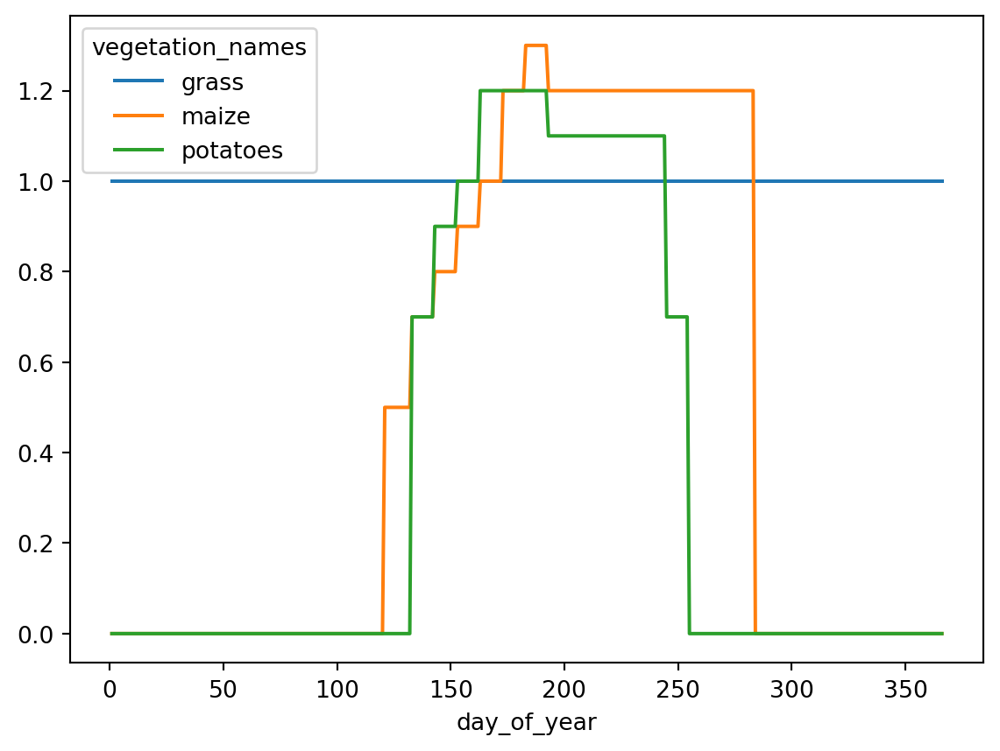

import numpy as np
import pandas as pd
import xarray as xr
import primod
import imod
from imod import mf6, mswExample
This example illustrates how to setup a simple MetaSWAP model coupled to a Modflow 6 model model using the imod package and associated packages.
Overview of steps made:
- Create Modflow 6 model
- Create MetaSWAP model
- Write coupled models
We’ll start with the following imports:
Modflow 6 model
Next, we initiate the Modflow 6 groundwater model:
gwf_model = mf6.GroundwaterFlowModel()Create grid
We’ll then define the Modflow 6 grid. It consists of 3 layers of 9 by 9 cells rasters.
shape = nlay, nrow, ncol = 3, 9, 9
dx = 10.0
dy = -10.0
dz = np.array([1.0, 2.0, 10.0])
xmin = 0.0
xmax = dx * ncol
ymin = 0.0
ymax = abs(dy) * nrow
dims = ("layer", "y", "x")
layer = np.arange(1, nlay + 1)
y = np.arange(ymax, ymin, dy) + 0.5 * dy
x = np.arange(xmin, xmax, dx) + 0.5 * dx
coords = {"layer": layer, "y": y, "x": x}
idomain = xr.DataArray(np.ones(shape, dtype=int), coords=coords, dims=dims)
top = 0.0
bottom = top - xr.DataArray(
np.cumsum(layer * dz), coords={"layer": layer}, dims="layer"
)gwf_model["dis"] = mf6.StructuredDiscretization(idomain=idomain, top=top, bottom=bottom)Hydrogeology
Hydraulic conductivity
Assign the node property flow package, which specifies the hydraulic conductivities. The middle layer is an aquitard.
k = xr.DataArray([10.0, 0.1, 10.0], {"layer": layer}, ("layer",))
k33 = xr.DataArray([1.0, 0.01, 1.0], {"layer": layer}, ("layer",))
gwf_model["npf"] = mf6.NodePropertyFlow(
icelltype=0,
k=k,
k33=k33,
save_flows=True,
)Storage
Cells are set to non-convertible (convertible = 0). This is a requirement for MetaSWAP, because, once coupled, MetaSWAP is responsible for computing the storage coefficient instead of Modflow.
gwf_model["sto"] = mf6.SpecificStorage(
specific_storage=1e-3, specific_yield=0.0, transient=True, convertible=0
)Initial conditions
gwf_model["ic"] = mf6.InitialConditions(start=0.5)Output Control
gwf_model["oc"] = mf6.OutputControl(save_head="last", save_budget="last")Boundary conditions
Constant head
We’ll create constant head cells at the most left and right columns of the grid, representing two ditches.
head = xr.full_like(idomain, np.nan, dtype=float)
head[0, :, 0] = -1.0
head[0, :, -1] = -1.0
gwf_model["chd"] = mf6.ConstantHead(
head, print_input=True, print_flows=True, save_flows=True
)
head.isel(layer=0).plot()
Dummy boundary conditions
The iMOD Coupler requires a dummy recharge package, and well package if MetaSWAP’s sprinkling is enabled. This to let Modflow 6 allocate the appropriate matrices needed in the exchange of states during model computation.
Recharge
We’ll start off with the recharge package, which has no recharge cells at the location of our ditches.
recharge = xr.zeros_like(idomain.sel(layer=1), dtype=float)
recharge[:, 0] = np.nan
recharge[:, -1] = np.nan
gwf_model["rch_msw"] = mf6.Recharge(recharge)
recharge.plot()
Wells
We’ll create a dummy well package as well. imod.mf6.WellDisStructured needs its input data provided as long tables instead of grids to so therefore we’ll create 1d arrays by calling np.tile on the column indices, and np.repeat on the row indices.
wel_layer = 3
ix = np.tile(np.arange(ncol) + 1, nrow)
iy = np.repeat(np.arange(nrow) + 1, ncol)
rate = np.zeros(ix.shape)
layer = np.full_like(ix, wel_layer)
gwf_model["wells_msw"] = mf6.WellDisStructured(
layer=layer, row=iy, column=ix, rate=rate
)Initiate a Modflow 6 simulation and attach the groundwater model to it.
simulation = mf6.Modflow6Simulation("test")
simulation["GWF_1"] = gwf_model
# Define solver settings, we'll use a preset that is sufficient for this example.
simulation["solver"] = mf6.SolutionPresetSimple(
modelnames=["GWF_1"], print_option="summary", csv_output=False, no_ptc=True
)Create time discretization, we’ll model 2 days.
freq = "D"
times = pd.date_range(start="1/1/1971", end="1/3/1971", freq=freq)
simulation.create_time_discretization(additional_times=times)
timesDatetimeIndex(['1971-01-01', '1971-01-02', '1971-01-03'], dtype='datetime64[ns]', freq='D')MetaSWAP model
The next step is initiating a MetaSwapModel. Critical is setting the right path to MetaSWAP’s soil physical database, which contains the lookup table with the soil physical relationships. Without access to this database MetaSWAP cannot function. The full database can be downloaded here.
msw_model = msw.MetaSwapModel(unsaturated_database="./path/to/unsaturated/database")
# Create grid
# ```````````
#
# We'll start off specifying the grids required for MetaSWAP. The x,y values
# of this grid should be identical as the Modflow6 model, but it should
# not have a layer dimension.
msw_grid = idomain.sel(layer=1, drop=True).astype(float)We do not want MetaSWAP cells in the cells where the ditches are located in Modflow 6. We can specify where MetaSWAP cells are active with the “active” grid, which is a grid of booleans (i.e. True/False).
active = msw_grid.astype(bool)
active[..., 0] = False
active[..., -1] = False
active<xarray.DataArray (y: 9, x: 9)> Size: 81B
array([[False, True, True, True, True, True, True, True, False],
[False, True, True, True, True, True, True, True, False],
[False, True, True, True, True, True, True, True, False],
[False, True, True, True, True, True, True, True, False],
[False, True, True, True, True, True, True, True, False],
[False, True, True, True, True, True, True, True, False],
[False, True, True, True, True, True, True, True, False],
[False, True, True, True, True, True, True, True, False],
[False, True, True, True, True, True, True, True, False]])
Coordinates:
* y (y) float64 72B 85.0 75.0 65.0 55.0 45.0 35.0 25.0 15.0 5.0
* x (x) float64 72B 5.0 15.0 25.0 35.0 45.0 55.0 65.0 75.0 85.0Another crucial grid is the “area” grid. The area grid denotes the area in each cell, for each “subunit”. A subunit represent a separate landuse in the grid. We’ll create a grid with two separate land uses.
Each grid which specifies parameters related to landuse (e.g. landuse, rootzone_depth, ponding depth) requires a subunit dimension. In contrast, grids specifying parameters not induced by landuse (e.g. soil type, elevation, precipitation) cannot contain a subunit dimension.
subunit = [0, 1]
total_cell_area = abs(dx * dy)
equal_area_per_subunit = total_cell_area / len(subunit)
total_cell_area
# Create a full grid equal to the msw_grid. And expand_dims() to broadcast this
# grid along a new dimension, named "subunit"
area = (
xr.full_like(msw_grid, equal_area_per_subunit, dtype=float)
.expand_dims(subunit=subunit)
.copy() # expand_dims creates a view, so copy it to allow setting values.
)
# To the left we only have subunit 0
area[0, :, :3] = total_cell_area
area[1, :, :3] = np.nan
# To the right we only have subunit 1
area[0, :, -3:] = np.nan
area[1, :, -3:] = total_cell_area
area<xarray.DataArray (subunit: 2, y: 9, x: 9)> Size: 1kB
array([[[100., 100., 100., 50., 50., 50., nan, nan, nan],
[100., 100., 100., 50., 50., 50., nan, nan, nan],
[100., 100., 100., 50., 50., 50., nan, nan, nan],
[100., 100., 100., 50., 50., 50., nan, nan, nan],
[100., 100., 100., 50., 50., 50., nan, nan, nan],
[100., 100., 100., 50., 50., 50., nan, nan, nan],
[100., 100., 100., 50., 50., 50., nan, nan, nan],
[100., 100., 100., 50., 50., 50., nan, nan, nan],
[100., 100., 100., 50., 50., 50., nan, nan, nan]],
[[ nan, nan, nan, 50., 50., 50., 100., 100., 100.],
[ nan, nan, nan, 50., 50., 50., 100., 100., 100.],
[ nan, nan, nan, 50., 50., 50., 100., 100., 100.],
[ nan, nan, nan, 50., 50., 50., 100., 100., 100.],
[ nan, nan, nan, 50., 50., 50., 100., 100., 100.],
[ nan, nan, nan, 50., 50., 50., 100., 100., 100.],
[ nan, nan, nan, 50., 50., 50., 100., 100., 100.],
[ nan, nan, nan, 50., 50., 50., 100., 100., 100.],
[ nan, nan, nan, 50., 50., 50., 100., 100., 100.]]])
Coordinates:
* subunit (subunit) int64 16B 0 1
* y (y) float64 72B 85.0 75.0 65.0 55.0 45.0 35.0 25.0 15.0 5.0
* x (x) float64 72B 5.0 15.0 25.0 35.0 45.0 55.0 65.0 75.0 85.0Landuse
Define a grid with landuse classes.
landuse = xr.full_like(area, 1, dtype=np.int16)
landuse[1, :, :] = 2
landuse<xarray.DataArray (subunit: 2, y: 9, x: 9)> Size: 324B
array([[[1, 1, 1, 1, 1, 1, 1, 1, 1],
[1, 1, 1, 1, 1, 1, 1, 1, 1],
[1, 1, 1, 1, 1, 1, 1, 1, 1],
[1, 1, 1, 1, 1, 1, 1, 1, 1],
[1, 1, 1, 1, 1, 1, 1, 1, 1],
[1, 1, 1, 1, 1, 1, 1, 1, 1],
[1, 1, 1, 1, 1, 1, 1, 1, 1],
[1, 1, 1, 1, 1, 1, 1, 1, 1],
[1, 1, 1, 1, 1, 1, 1, 1, 1]],
[[2, 2, 2, 2, 2, 2, 2, 2, 2],
[2, 2, 2, 2, 2, 2, 2, 2, 2],
[2, 2, 2, 2, 2, 2, 2, 2, 2],
[2, 2, 2, 2, 2, 2, 2, 2, 2],
[2, 2, 2, 2, 2, 2, 2, 2, 2],
[2, 2, 2, 2, 2, 2, 2, 2, 2],
[2, 2, 2, 2, 2, 2, 2, 2, 2],
[2, 2, 2, 2, 2, 2, 2, 2, 2],
[2, 2, 2, 2, 2, 2, 2, 2, 2]]], dtype=int16)
Coordinates:
* subunit (subunit) int64 16B 0 1
* y (y) float64 72B 85.0 75.0 65.0 55.0 45.0 35.0 25.0 15.0 5.0
* x (x) float64 72B 5.0 15.0 25.0 35.0 45.0 55.0 65.0 75.0 85.0Soil types
Define soil type classes. These will be looked up in MetaSWAP’s giant lookup table for the national Staring series describing Dutch soils. The full database can be downloaded here. <https://download.deltares.nl/metaswap> In previous examples we set values in our DataArray using numpy indexing. But we can also use xarray’s where() method to set values.
slt = xr.full_like(msw_grid, 1, dtype=np.int16)
# Set all cells on the right half to 2.
slt = slt.where((slt.x < (xmax / 2)), 2)
slt<xarray.DataArray (y: 9, x: 9)> Size: 162B
array([[1, 1, 1, 1, 2, 2, 2, 2, 2],
[1, 1, 1, 1, 2, 2, 2, 2, 2],
[1, 1, 1, 1, 2, 2, 2, 2, 2],
[1, 1, 1, 1, 2, 2, 2, 2, 2],
[1, 1, 1, 1, 2, 2, 2, 2, 2],
[1, 1, 1, 1, 2, 2, 2, 2, 2],
[1, 1, 1, 1, 2, 2, 2, 2, 2],
[1, 1, 1, 1, 2, 2, 2, 2, 2],
[1, 1, 1, 1, 2, 2, 2, 2, 2]], dtype=int16)
Coordinates:
* y (y) float64 72B 85.0 75.0 65.0 55.0 45.0 35.0 25.0 15.0 5.0
* x (x) float64 72B 5.0 15.0 25.0 35.0 45.0 55.0 65.0 75.0 85.0Finishing the grid
To finish specifying the landuse grid data, we’ll require a rootzone depth for each subunit, and a grid with surface elevations
rootzone_depth = xr.full_like(area, 0.5)
surface_elevation = xr.full_like(msw_grid, 2.0)
msw_model["grid"] = msw.GridData(
area=area,
landuse=landuse,
rootzone_depth=rootzone_depth,
surface_elevation=surface_elevation,
soil_physical_unit=slt,
active=active,
)Initial Condition
There are four options to specify initial conditions, see this for page for an explanation —link-here—. In this case we opt for an initial pF value of 2.2.
msw_model["ic"] = msw.InitialConditionsRootzonePressureHead(initial_pF=2.2)Meteorology
Meteorological information should be provided as grids with a time dimension.
precipitation = msw_grid.expand_dims(time=times[:-1])
evapotranspiration = precipitation * 1.5
msw_model["meteo_grid"] = msw.MeteoGrid(precipitation, evapotranspiration)
msw_model["mapping_prec"] = msw.PrecipitationMapping(precipitation)
msw_model["mapping_evt"] = msw.EvapotranspirationMapping(evapotranspiration)Ponding
msw_model["ponding"] = msw.Ponding(
ponding_depth=xr.full_like(area, 0.0),
runon_resistance=xr.full_like(area, 1.0),
runoff_resistance=xr.full_like(area, 1.0),
)Scaling Factors
Scaling factors can be defined to adapt some parameters in the soil physical database. With this you can investigate the sensitivity of parameters in soil physical database. Furthermore, with this package you can specify the depth of the perched water table.
msw_model["scaling"] = msw.ScalingFactors(
scale_soil_moisture=xr.full_like(area, 1.0),
scale_hydraulic_conductivity=xr.full_like(area, 1.0),
scale_pressure_head=xr.full_like(area, 1.0),
depth_perched_water_table=xr.full_like(msw_grid, 1.0),
)Infiltration Factors
Set the infiltration parameters. We set the resistances to -9999.0, which makes MetaSWAP ignore them.
msw_model["infiltration"] = msw.Infiltration(
infiltration_capacity=xr.full_like(area, 1.0),
downward_resistance=xr.full_like(msw_grid, -9999.0),
upward_resistance=xr.full_like(msw_grid, -9999.0),
bottom_resistance=xr.full_like(msw_grid, -9999.0),
extra_storage_coefficient=xr.full_like(msw_grid, 0.1),
)Landuse options
The landuse option class constructs a lookup table which is used to map landuse indices to a set of parameters. In this example, 3 stands for potatoes. This means that for every cell in the landuse grid with a 3, the parameters for a crop with vegetation_index == 3 are associate, which in this case are potatoes.
vegetation_index = [1, 2, 3]
names = ["grassland", "maize", "potatoes"]
landuse_index = [1, 2, 3]
coords = {"landuse_index": landuse_index}
landuse_names = xr.DataArray(data=names, coords=coords, dims=("landuse_index",))
vegetation_index_da = xr.DataArray(
data=vegetation_index, coords=coords, dims=("landuse_index",)
)Because there are a lot of parameters to define, we’ll create a DataArray of ones (lu) to more easily broadcast all the different parameters.
lu = xr.ones_like(vegetation_index_da, dtype=float)
msw_model["landuse_options"] = msw.LanduseOptions(
landuse_name=landuse_names,
vegetation_index=vegetation_index_da,
jarvis_o2_stress=xr.ones_like(lu),
jarvis_drought_stress=xr.ones_like(lu),
feddes_p1=xr.full_like(lu, 99.0),
feddes_p2=xr.full_like(lu, 99.0),
feddes_p3h=lu * [-2.0, -4.0, -3.0],
feddes_p3l=lu * [-8.0, -5.0, -5.0],
feddes_p4=lu * [-80.0, -100.0, -100.0],
feddes_t3h=xr.full_like(lu, 5.0),
feddes_t3l=xr.full_like(lu, 1.0),
threshold_sprinkling=lu * [-8.0, -5.0, -5.0],
fraction_evaporated_sprinkling=xr.full_like(lu, 0.05),
gift=xr.full_like(lu, 20.0),
gift_duration=xr.full_like(lu, 0.25),
rotational_period=lu * [10, 7, 7],
start_sprinkling_season=lu * [120, 180, 150],
end_sprinkling_season=lu * [230, 230, 240],
interception_option=xr.ones_like(lu, dtype=int),
interception_capacity_per_LAI=xr.zeros_like(lu),
interception_intercept=xr.ones_like(lu),
)Crop Growth
Crop growth tables are specified as a two-dimensional array, with the day of year as one dimension, and the vegetation index on the other. In the vegetation factors, we’ll show how to bring some distinction between different crops.
We’ll start off specifying the coordinates:
day_of_year = np.arange(1, 367)
vegetation_index = np.arange(1, 4)
coords = {"day_of_year": day_of_year, "vegetation_index": vegetation_index}We can use the coordinates to specify the soil cover of each plant. We’ll start with a grid of zeros
soil_cover = xr.DataArray(
data=np.zeros(day_of_year.shape + vegetation_index.shape),
coords=coords,
dims=("day_of_year", "vegetation_index"),
)The simplest soil cover specification is a step function. In this case soil cover equals 1.0 for days 133 to 255 (mind Python’s 0-based index here), and for the rest of the days it equals zero.
soil_cover[132:254, :] = 1.0
soil_cover.sel(vegetation_index=1).plot()
We’ll simply triple the soil cover to get a leaf area index
leaf_area_index = soil_cover * 3Vegetation factors are used to convert the Makkink reference evapotranspiration to a potential evapotranspiration for a certain vegetation type. We’ll specify some simple crop schemes for the three crops as vegetation factors. Mind that the vegetation factor array has two dimensions: day_of_year and vegetation_index
vegetation_names = ["grass", "maize", "potatoes"]
vegetation_factor = xr.zeros_like(soil_cover)
vegetation_factor[120:132, :] = [1.0, 0.5, 0.0]
vegetation_factor[132:142, :] = [1.0, 0.7, 0.7]
vegetation_factor[142:152, :] = [1.0, 0.8, 0.9]
vegetation_factor[152:162, :] = [1.0, 0.9, 1.0]
vegetation_factor[162:172, :] = [1.0, 1.0, 1.2]
vegetation_factor[172:182, :] = [1.0, 1.2, 1.2]
vegetation_factor[182:192, :] = [1.0, 1.3, 1.2]
vegetation_factor[192:244, :] = [1.0, 1.2, 1.1]
vegetation_factor[244:254, :] = [1.0, 1.2, 0.7]
vegetation_factor[254:283, :] = [1.0, 1.2, 0.0]
# Since grass is the reference crop, force all grass to 1.0
vegetation_factor[:, 0] = 1.0
# Assign vegetation names for the plot
vegetation_factor.assign_coords(
vegetation_names=("vegetation_index", vegetation_names)
).plot.line(x="day_of_year", hue="vegetation_names")
We’ll leave the interception capacity at zero, and the other factors at one, and assign these to the AnnualCropFactors package.
msw_model["crop_factors"] = msw.AnnualCropFactors(
soil_cover=soil_cover,
leaf_area_index=leaf_area_index,
interception_capacity=xr.zeros_like(soil_cover),
vegetation_factor=vegetation_factor,
interception_factor=xr.ones_like(soil_cover),
bare_soil_factor=xr.ones_like(soil_cover),
ponding_factor=xr.ones_like(soil_cover),
)Output Control
msw_model["oc_idf"] = msw.IdfMapping(area, -9999.0)
msw_model["oc_var"] = msw.VariableOutputControl()
msw_model["oc_time"] = msw.TimeOutputControl(time=times)MetaSWAP Mappings
MetaSWAP requires its own mapping of SVAT to MODFLOW cells, for internal use. We therefore provide the mf6.StructuredDiscretization and mf6.Well package to mf6.CouplerMapping.
msw_model["mod2svat"] = msw.CouplerMapping(
modflow_dis=gwf_model["dis"], well=gwf_model["wells_msw"]
)The sprinkling package also requires the Modflow6 wells.
msw_model["sprinkling"] = msw.Sprinkling(
max_abstraction_groundwater=xr.full_like(msw_grid, 100.0),
max_abstraction_surfacewater=xr.full_like(msw_grid, 100.0),
well=gwf_model["wells_msw"],
)Coupler mapping
The MetaSWAP model and Modflow 6 simulation are provided to the MetaMod class, which takes care of connecting (= “mapping”) the two models. Make sure to provide the keys of the dummy Modflow 6 boundary conditions where MetaSWAP is coupled to, so iMOD Python knows where to look: It is technically possible to define multiple WEL and RCH packages in Modflow 6.
driver_coupling = primod.MetaModDriverCoupling(
mf6_model="GWF_1",
mf6_recharge_package="rch_msw",
mf6_wel_package="wells_msw",
)
metamod = primod.MetaMod(
msw_model=msw_model,
mf6_simulation=simulation,
coupling_list=[driver_coupling],
)We can write the coupled models by providing the following necessary paths to iMOD Coupler:
- modflow 6 library
- metaswap library
- directory with dependent libraries for metaswap
You can download the modflow and metaswap libraries (.dll’s) as part of the the last iMOD Coupler release for Windows for free. Please contact imod.support@deltares.nl if you require the libraries for Linux.
metamod_dir = imod.util.temporary_directory()
mf6_dll = "./path/to/mf6.dll"
metaswap_dll = "./path/to/metaswap.dll"
metaswap_dll_dependency_dir = "./path/to/metaswap/dll/dependency/directory"
metamod.write(metamod_dir, mf6_dll, metaswap_dll, metaswap_dll_dependency_dir)/home/runner/work/iMOD-Documentation/iMOD-Documentation/.pixi/envs/default/lib/python3.12/site-packages/imod/formats/array_io/writing.py:37: UserWarning: The `squeeze` kwarg to GroupBy is being removed.Pass .groupby(..., squeeze=False) to disable squeezing, which is the new default, and to silence this warning.
for coordvals, a_yx in list(stacked.groupby("idf")):
/home/runner/work/iMOD-Documentation/iMOD-Documentation/.pixi/envs/default/lib/python3.12/site-packages/imod/formats/array_io/writing.py:37: UserWarning: The `squeeze` kwarg to GroupBy is being removed.Pass .groupby(..., squeeze=False) to disable squeezing, which is the new default, and to silence this warning.
for coordvals, a_yx in list(stacked.groupby("idf")):Running the models
In order to run the models, make sure you install imod_coupler. You can find the installation instructions here.